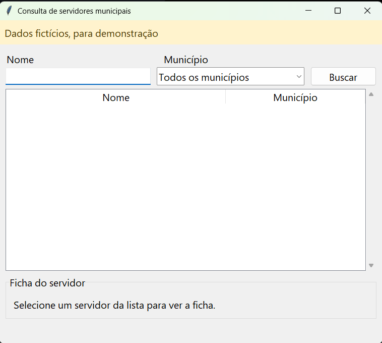
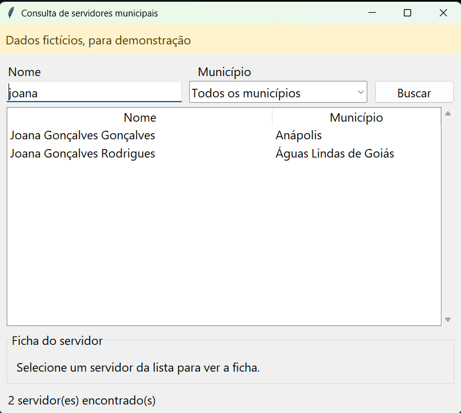
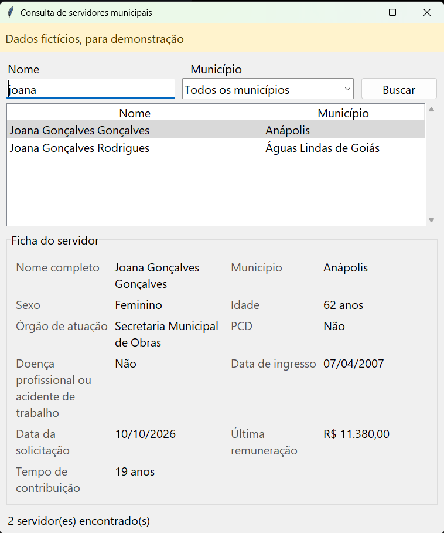
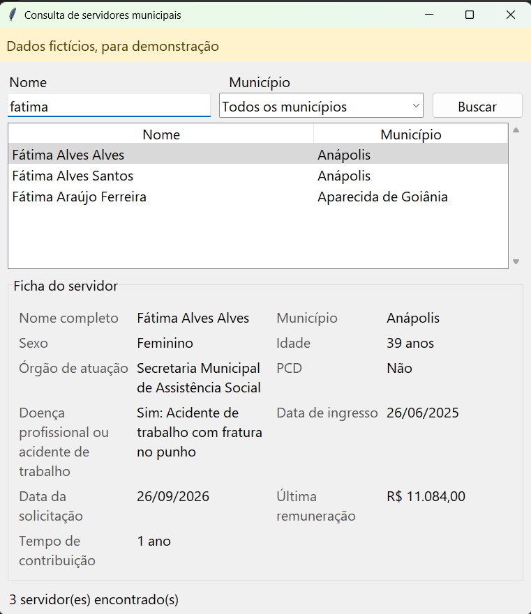
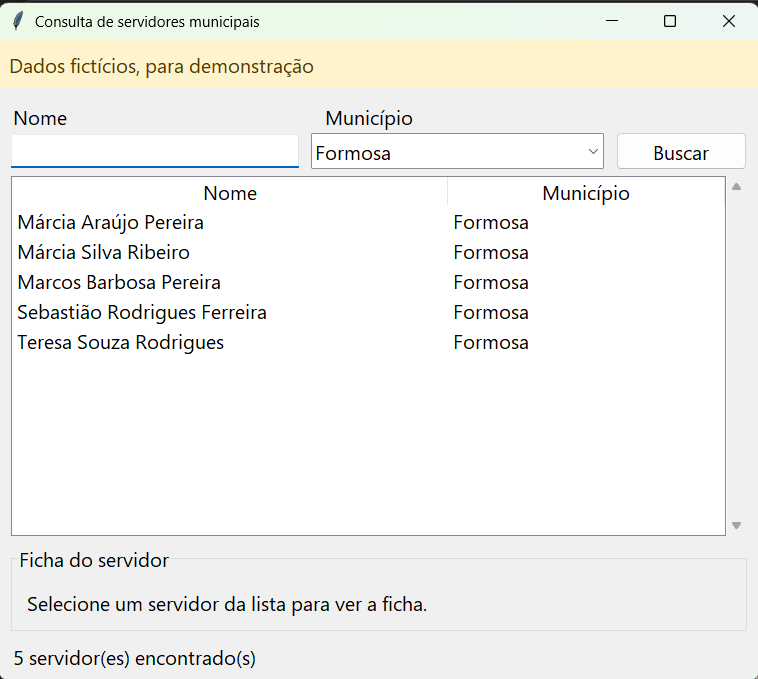
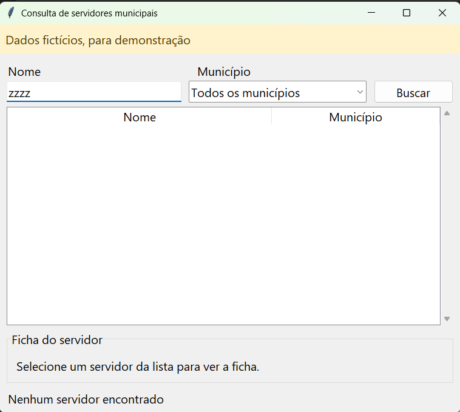

Protótipo cliente-servidor com comunicação protegida por TLS, feito para a Secretaria de Atos de Pessoal do TCM-GO (Projeto Integrador III-A, PUC Goiás).
Resumo técnico para acompanhamento do projeto, em 18/11/2026. Não é o relatório oficial do PI (RP-03), que tem formato e seções próprios. Dados do sistema: 100% fictícios.
Em uma frase: um servidor Python guarda uma base fictícia de 50 servidores de 10 municípios de Goiás e responde, por um canal TLS, às buscas de uma janela Tkinter, que mostra a lista de resultados e a ficha completa de cada servidor. O cliente só confia em servidores com certificado emitido pela CA local do projeto.
1. O que a proposta pede e o que o sistema entrega
Pedido da proposta
Como o projeto atende
Situação
Instituição real e necessidade identificada
TCM-GO. A análise de aposentadorias exige consultar a situação funcional de servidores de vários municípios, hoje em fontes separadas. Representante: Juliana, chefe direta do estudante.
Definido
Servidor que armazena, recebe solicitações, processa e devolve
consulta/servidor.py carrega data/servidores.json, atende cada conexão em uma thread e executa três operações: municipios, buscar e ficha.
Pronto
Cliente que consulta por rede e apresenta de forma organizada
Janela Tkinter (consulta/interface.py): campo de nome, filtro de município, lista de resultados e painel com a ficha. Cada ação vira uma requisição pela rede.
Pronto
Sem banco, execução local, sem hospedagem
Base em arquivo JSON, tudo em 127.0.0.1, só biblioteca padrão do Python (um teste confere os imports).
Pronto
Proteger a comunicação com recurso de segurança existente
TLS (módulo ssl do Python) com CA local criada pelo openssl. O cliente exige certificado assinado pela CA do projeto e recusa qualquer outro.
Pronto
Evitar exposição de informação sensível
Base fictícia (aviso na janela e no README). A data de nascimento nunca sai do servidor, só a idade. Chaves privadas fora do Git. O log do servidor não registra o conteúdo das fichas.
Pronto
Demonstrar à instituição e registrar sugestões
Demonstração à Juliana antes de 26/11, com os campos da ficha conferidos por ela.
Pendente
Código-fonte com instruções de execução
Repositório no GitHub (PR #2 mergeado na main) e README.md com o passo a passo.
Pronto
Relatório técnico PDF (até 5 págs)
A escrever, com as capturas de tela deste documento como evidência.
Pendente (07/12)
Vídeo de até 10 min
A gravar: servidor e cliente rodando, uma busca, a ficha, a recusa do servidor falso.
Pendente (07/12)
Carta de Início e Termos assinados
Carta assinada pelo estudante e pelo professor. Termos aguardam o preenchimento e a assinatura da Juliana (prazo 23/11, 23h59).
Parcial
2. Como o sistema funciona
Protocolo: uma conexão TLS por requisição. O cliente envia uma linha JSON (UTF-8), o servidor responde uma linha JSON e a conexão fecha. Limite de 64 KiB por linha e 5 s de timeout.
Operações:municipios (lista para o filtro), buscar (nome e município) e ficha (por id).
Erros tratados:REQUISICAO_INVALIDA, OPERACAO_DESCONHECIDA, NAO_ENCONTRADO e ERRO_INTERNO. Um erro afeta só a conexão que o causou.
Cálculos no servidor: idade e tempo de contribuição, em anos completos, até a data da solicitação. O cliente só apresenta.
Janela que não trava: a rede roda em thread de trabalho, e o resultado volta por uma fila. Se o servidor cair, a janela mostra o aviso e continua aberta.
3. Tomada de decisão
Tema
Decisão
Por quê (e o que ficou de fora)
Instituição e necessidade
TCM-GO, consulta de servidores para análise de aposentadoria
O estudante trabalha na Secretaria de Atos de Pessoal, então a necessidade é real e a Juliana pode validar.
Dados
Base fictícia, 10 municípios e 50 servidores, gerada por script com semente fixa
Evita expor dados reais (LGPD) e mantém o escopo pequeno. Gerar por script deixa a base reproduzível e versionável.
Linguagem
Python, só biblioteca padrão
socket, ssl, threading e tkinter já vêm com a linguagem. Sem pip install, o professor roda direto.
Protocolo
JSON por linha sobre socket TLS
A proposta fala em "comunicação em rede". Fácil de mostrar no vídeo e sem framework. HTTP/REST traria mais peças sem ganho.
Uma conexão por requisição
Conectar, pedir, receber, fechar
Sem autenticação não há sessão. Cada consulta é independente e uma queda aparece só na ação que falhou.
Concorrência
Uma thread por conexão
Atende vários clientes com pouco código. A base é só leitura, então não precisa de trava. O handshake roda na thread, e um cliente lento não bloqueia os outros.
Segurança
TLS com CA local (RSA 3072), cliente confia só nela
O material das disciplinas trata de TLS, certificados e Autoridade Certificadora. Um certificado autoassinado seria mais simples, mas não mostraria a cadeia de confiança. A biblioteca externa cryptography foi descartada por quebrar a regra de não instalar nada.
Certificados estritos
CA com basicConstraints e keyUsage críticos; servidor com SAN e serverAuth
O Python 3.13+ liga VERIFY_X509_STRICT. Em vez de desligar a verificação, os certificados foram emitidos de forma compatível.
Interface
Janela Tkinter, no lugar de linha de comando
A proposta aceita CLI, mas a janela é mais apresentável no vídeo. Fonte de 12 pt ou mais para gravação de tela.
Busca
Por trecho do nome, sem acento e sem diferenciar maiúsculas; filtro por município; nome vazio lista todos
O analista nem sempre lembra a grafia exata. Normalização em NFKD, igual para busca e comparação.
Cálculos
Idade e tempo de contribuição em anos completos, até a data da solicitação
Mesma referência de data para os dois valores. Simplificação aceita pelo estudante.
Escopo recusado
Sem login, sem indicar elegibilidade à aposentadoria, sem edição de dados
A proposta manda evitar complexidade excessiva. O sistema só apresenta dados. Login ficou como melhoria futura.
Método de trabalho
Spec-Driven: PRD, TechSpec, 12 tasks, check-spec e execução task a task
Cada requisito (14 RF, 6 RNF, 6 RP) tem rastreio até um componente e um teste. Nada foi feito sem requisito.
Janela do cliente: Entry, Combobox, Treeview e painel de ficha.
OpenSSL 3.5
Gera a CA local e o certificado do servidor (scripts/gerar_certificados.py). No Windows vem com o Git for Windows.
unittest e ast
117 testes automatizados. O ast confere que nenhum import sai da biblioteca padrão.
Git e GitHub
Commits no padrão Conventional Commits, uma branch de trabalho e Pull Request revisado e mergeado pelo estudante.
Claude Code
Assistente de desenvolvimento, usado no fluxo Spec-Driven (levantamento do PRD, TechSpec, tasks em Gherkin, implementação e testes). Decisões e aprovações ficaram com o estudante.
Context7
Consulta à documentação do módulo ssl do CPython (3.13), para configurar a verificação estrita do certificado.
5. O que o sistema mostra (capturas da janela real)
Capturas feitas em 18/11/2026 com o servidor e a janela reais, comunicando por TLS 1.3 em 127.0.0.1. A faixa amarela avisa que os dados são fictícios.

1. Tela inicial: faixa de aviso, nome, filtro de município e botão Buscar.

2. Busca por "joana": 2 resultados, de municípios diferentes.

3. Ficha do servidor: datas em DD/MM/AAAA, valor em R$, idade e tempo de contribuição calculados no servidor.

4. "fatima" (sem acento) encontra "Fátima". A ficha mostra "Sim: Acidente de trabalho com fratura no punho".

5. Filtro por município (Formosa) com nome vazio: lista os 5 servidores do município.

6. Busca sem resultado: mensagem clara, sem erro.
7. Servidor com certificado de outra CA: o cliente recusa e avisa.
Por que a captura 7 importa. O servidor falso estava no ar e respondia por TLS, mas seu certificado foi assinado por uma CA diferente da ca.crt do projeto. O aperto de mão falhou antes de qualquer consulta, então nenhum dado foi trocado. O log do servidor falso registra falha_de_conexao (SSLError). É a prova do requisito de proteger a comunicação (RF-14).
6. Como foi testado e validado
Resultado dos checks em 18/11/2026
python -m unittest discover -s tests -> Ran 117 tests, OK (skipped=1)
python -m compileall -q consulta scripts tests -> sem erros
git check-ignore certs/servidor.key certs/ca.key -> ambos ignorados (chaves fora do Git)
O teste pulado é o que só se aplica a sistemas POSIX. Nenhum warning novo.
Arquivo de teste
Testes
O que prova
test_integracao_tls.py
30
Servidor e cliente reais com TLS: as três operações, os quatro códigos de erro, duas consultas simultâneas, certificado de outra CA recusado, servidor parado, busca abaixo de 1 s.
test_interface.py
26
Janela com cliente falso: lista, ficha, "nenhum resultado", erro de rede, faixa "dados fictícios", fonte de 12 pt ou mais.
test_protocolo.py
14
Linha válida, JSON inválido, mensagem grande demais.
test_busca.py
12
Acentos, maiúsculas, trecho do nome, filtro por município.
test_certificados.py
11
Geração da CA e do certificado, openssl verify, chaves fora do Git.
test_dominio.py
8
Anos completos: aniversário no dia, na véspera e em 29/02; campos da ficha.
test_sem_dependencias_externas.py
7
Todo import vem da biblioteca padrão.
test_base.py e test_gerar_base.py
5 + 4
Base válida, 10 municípios e 50 servidores, geração idêntica byte a byte.
Rastreio: requisito da spec, prova
Requisito
Prova
RF-01 base fictícia
Gerador roda duas vezes e dá o mesmo arquivo; base com 10 municípios e 50 servidores.
RF-02 a RF-09 ficha e busca
Testes de domínio, de busca e de integração; captura da ficha (seção 5).
RF-10, RF-11 cliente-servidor e simultaneidade
Integração com duas consultas ao mesmo tempo, uma delas lenta.
RF-12, RF-13 falhas
Servidor parado vira mensagem; solicitação inválida recebe erro e o servidor segue atendendo.
RF-14 TLS e CA local
Handshake com a CA do projeto funciona; com outra CA o cliente recusa (captura 07).
RNF-01 a RNF-06
Faixa fictícia, chaves ignoradas pelo Git, busca abaixo de 1 s, imports da biblioteca padrão, fonte de 12 pt, certificados regeneráveis por script.
Limites conhecidos, sem esconder nada:
A demonstração à Juliana ainda não aconteceu. Os campos da ficha só estão confirmados pelo estudante.
Tudo foi testado em uma máquina (Windows 11, Python 3.15). A documentação consultada cobre o Python 3.13, e o comportamento na 3.15 foi confirmado pelos testes.
O cliente em outro computador está fora do escopo. A demonstração é local.
Não há login nem perfis. Qualquer cliente com a ca.crt consulta o servidor.
7. Passo a passo para testar como usuário
Antes de começar: abra a pasta do projeto no terminal (PowerShell ou Git Bash) e use dois terminais, um para o servidor e outro para o cliente. Se python não funcionar, use python3 ou py.
Gerar os certificados (só se a pasta certs/ não existir)
python scripts/gerar_certificados.py
Esperado: mensagem "Certificados gravados em certs" e quatro arquivos: ca.crt, ca.key, servidor.crt, servidor.key.
Terminal 1: subir o servidor e deixar aberto
python -m consulta.servidor
Esperado: "Servidor no ar em 127.0.0.1:8443 (Ctrl+C para encerrar)". Se a porta estiver ocupada, use --porta 9443 aqui e no cliente.
Terminal 2: abrir o cliente
python -m consulta.interface
Esperado: janela "Consulta de servidores municipais" com a faixa amarela "Dados fictícios, para demonstração". A lista de municípios carrega sozinha no filtro.
Busca simples. Digite joana e clique em Buscar.
Esperado: 2 resultados: Joana Gonçalves Gonçalves (Anápolis) e Joana Gonçalves Rodrigues (Águas Lindas de Goiás). Rodapé: "2 servidor(es) encontrado(s)".
Abrir a ficha. Clique em "Joana Gonçalves Gonçalves".
Esperado: Feminino, 62 anos, Secretaria Municipal de Obras, PCD Não, doença profissional Não, ingresso 07/04/2007, solicitação 10/10/2026, remuneração R$ 11.380,00, tempo de contribuição 19 anos. Não aparece data de nascimento nem se o servidor "pode se aposentar".
Acentos e maiúsculas. Busque fatima, depois FÁTIMA e depois fatim.
Esperado: as três buscas dão os mesmos 3 resultados (Fátima Alves Alves, Fátima Alves Santos, Fátima Araújo Ferreira). A ficha de Fátima Alves Alves mostra "Sim: Acidente de trabalho com fratura no punho".
Filtro por município. Apague o nome, escolha Formosa no filtro e clique em Buscar.
Esperado: os 5 servidores de Formosa (nome vazio lista todos). Agora digite marcia com Formosa escolhido: devem sobrar 2 (as duas Márcias). Volte o filtro para "Todos os municípios".
Busca sem resultado. Digite zzzz e busque.
Esperado: mensagem "Nenhum servidor encontrado", sem erro e sem fechar a janela.
Vários clientes ao mesmo tempo. Abra um terceiro terminal, rode python -m consulta.interface de novo e faça buscas diferentes nas duas janelas.
Esperado: as duas janelas respondem, sem uma esperar a outra.
Olhar o log do servidor (Terminal 1).
Esperado: uma linha por consulta, com hora, endereço do cliente, TLSv1.3, a cifra, a operação e resultado=ok. O conteúdo das fichas não aparece.
Servidor fora do ar. No Terminal 1, aperte Ctrl+C e, na janela, busque qualquer nome.
Esperado: "Não foi possível conectar ao servidor. Verifique se ele está em execução." A janela continua aberta. Suba o servidor de novo (passo 2) e busque: volta a funcionar sem reabrir a janela.
Servidor falso (a prova da segurança). Com o servidor verdadeiro parado:
Na janela do cliente, busque joana.
Esperado: "Servidor não confiável: o certificado não foi emitido pela CA do projeto." A lista fica vazia, e nenhum dado foi trocado. Pare o servidor falso (Ctrl+C) e rode o passo 2 para voltar ao normal.
Conferir os testes e os segredos (qualquer terminal)
Esperado: "OK" com 117 testes (1 pulado) e as duas chaves listadas como ignoradas.
8. O que falta e próximos passos
Prazo
O que fazer
23/11, 23h59
Termos com a Juliana: ela preenche, o estudante assina de novo por gov.br, ela assina, e tudo é anexado na Plataforma A. A Carta já está assinada.
Antes de 26/11
Demonstrar à Juliana usando o passo a passo acima (passos 2 a 8 e 12). Conferir os campos da ficha com ela e registrar por escrito as considerações.
07/12, 23h59
Relatório PDF (até 5 páginas, Arial 12, margens 2,5 e 3 cm, com as capturas da seção 5); vídeo de até 10 minutos; envio nos dois campos da Plataforma A.
Repositório: github.com/FhilipeRodrigues/projeto-integrador-iii-a. Especificação completa em docs/specs/2026-11-16-consulta-servidores-tcmgo/ (PRD, TechSpec, 12 tasks e check-spec).